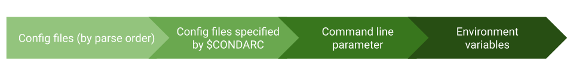

使用 .condarc conda 配置文件#
Using the .condarc conda configuration file
概述#
Overview
Conda 配置文件 .condarc 是一个可选的运行时配置文件，允许高级用户配置 conda 的各个方面，例如查找软件包时使用的渠道、代理设置和环境目录等。有关所有 conda 配置选项的信息，请参阅 配置页面。
备注
.condarc 文件也可用于管理员控制的安装中，用于覆盖用户的配置。参见 管理多用户 conda 安装。
.condarc 文件可以更改的参数包括但不限于：
Conda 查找软件包的位置。
Conda 是否使用代理服务器以及使用方式。
Conda 列出已知环境的位置。
是否在 Bash 提示符中显示当前激活的环境名称。
用户构建的软件包是否应上传至 Anaconda.org。
创建新环境时应包含哪些默认软件包或功能。
The conda configuration file, .condarc, is an optional
runtime configuration file that allows advanced users to
configure various aspects of conda, such as which channels it
searches for packages, proxy settings, and environment
directories. For all of the conda configuration options,
see the configuration page.
备注
A .condarc file can also be used in an
administrator-controlled installation to override the users’
configuration. See 管理多用户 conda 安装.
The .condarc file can change many parameters, including:
Where conda looks for packages.
If and how conda uses a proxy server.
Where conda lists known environments.
Whether to update the Bash prompt with the currently activated environment name.
Whether user-built packages should be uploaded to Anaconda.org.
What default packages or features to include in new environments.
创建和编辑#
Creating and editing
默认情况下不会创建 .condarc 文件，但在你第一次运行 conda config 命令时，它会自动在你的用户主目录中创建。要创建或修改 .condarc 文件，可以打开终端并输入 conda config 命令。
.condarc 配置文件使用简单的
YAML 语法。
示例：
conda config --add channels conda-forge
你也可以使用文本编辑器手动创建和编辑该文件，例如在 Windows 上使用 Notepad，在 macOS 上使用 TextEdit，或使用 VS Code。将文件命名为 .condarc 并保存到你的用户主目录或根目录。要编辑 .condarc 文件，只需像编辑其他文本文件一样操作即可。如果该文件存在于 root 环境中，将会覆盖主目录中的配置。
你可以在终端中输入 conda info 命令，查看关于 .condarc 文件的信息，包括它的具体位置。
你也可以下载一个 .condarc 示例文件 以便在编辑器中修改，并保存到你的用户主目录或根目录中。
要设置配置选项，可以直接编辑 .condarc 文件，或使用 conda config --set 命令。
示例：
将 auto_update_conda 选项设置为 False:
conda config --set auto_update_conda False
如需完整的 conda 配置命令列表，请参阅
命令参考，你也可以在终端中运行
conda config --help 来查看该列表。另请参考
conda 渠道配置文档 了解更多信息。
Conda 支持广泛的配置选项。本页面提供了最常用选项的一个非详尽列表及其用法。要查看当前 conda 版本支持的所有配置选项，请使用命令 conda config --describe。
The .condarc file is not included by default, but it is
automatically created in your home directory the first time you
run the conda config command. To create or modify a .condarc
file, open a terminal and enter the conda config command.
The .condarc configuration file follows simple
YAML syntax.
Example:
conda config --add channels conda-forge
Alternatively, you can open a text editor such as Notepad
on Windows, TextEdit on macOS, or VS Code. Name the new file
.condarc and save it to your user home directory or root
directory. To edit the .condarc file, open it from your
home or root directory and make edits in the same way you would
with any other text file. If the .condarc file is in the root
environment, it will override any in the home directory.
You can find information about your .condarc file by typing
conda info in your terminal. This will give you information about
your .condarc file, including where it is located.
You can also download a sample .condarc file to edit in your editor and save to your user home directory or root directory.
To set configuration options, edit the .condarc file directly
or use the conda config --set command.
Example:
To set the auto_update_conda option to False, run:
conda config --set auto_update_conda False
For a complete list of conda config commands, see the
command reference. The same list
is available at the terminal by running
conda config --help. You can also see the conda channel
configuration for more information.
Conda supports a wide range of configuration options. This page
gives a non-exhaustive list of the most frequently used options and
their usage. For a complete list of all available options for your
version of conda, use the conda config --describe command.
搜索 .condarc#
Searching for .condarc
Conda 会在以下路径中查找 .condarc 文件：
if on_win:
SEARCH_PATH = (
"C:/ProgramData/conda/.condarc",
"C:/ProgramData/conda/condarc",
"C:/ProgramData/conda/condarc.d",
)
else:
SEARCH_PATH = (
"/etc/conda/.condarc",
"/etc/conda/condarc",
"/etc/conda/condarc.d/",
"/var/lib/conda/.condarc",
"/var/lib/conda/condarc",
"/var/lib/conda/condarc.d/",
)
SEARCH_PATH += (
"$CONDA_ROOT/.condarc",
"$CONDA_ROOT/condarc",
"$CONDA_ROOT/condarc.d/",
"$XDG_CONFIG_HOME/conda/.condarc",
"$XDG_CONFIG_HOME/conda/condarc",
"$XDG_CONFIG_HOME/conda/condarc.d/",
"~/.config/conda/.condarc",
"~/.config/conda/condarc",
"~/.config/conda/condarc.d/",
"~/.conda/.condarc",
"~/.conda/condarc",
"~/.conda/condarc.d/",
"~/.condarc",
"$CONDA_PREFIX/.condarc",
"$CONDA_PREFIX/condarc",
"$CONDA_PREFIX/condarc.d/",
"$CONDARC",
)
XDG_CONFIG_HOME 是一个变量，指向应存储用户特定配置文件的位置，遵循 XDG 基础目录规范（XDGBDS）。如果未设置该变量，应默认使用 $HOME/.config。
CONDA_ROOT 是你的 base conda 安装路径。
CONDA_PREFIX 是当前激活环境的路径。
CONDARC 必须是以 .condarc、condarc 命名的文件路径，或是以 YAML 后缀（.yml 或 .yaml）结尾的路径。
备注
所有位于这些特殊搜索路径中的 condarc 文件，其扩展名必须是有效的 YAML 扩展名（“.yml” 或 “.yaml”）。
Conda looks in the following locations for a .condarc file:
if on_win:
SEARCH_PATH = (
"C:/ProgramData/conda/.condarc",
"C:/ProgramData/conda/condarc",
"C:/ProgramData/conda/condarc.d",
)
else:
SEARCH_PATH = (
"/etc/conda/.condarc",
"/etc/conda/condarc",
"/etc/conda/condarc.d/",
"/var/lib/conda/.condarc",
"/var/lib/conda/condarc",
"/var/lib/conda/condarc.d/",
)
SEARCH_PATH += (
"$CONDA_ROOT/.condarc",
"$CONDA_ROOT/condarc",
"$CONDA_ROOT/condarc.d/",
"$XDG_CONFIG_HOME/conda/.condarc",
"$XDG_CONFIG_HOME/conda/condarc",
"$XDG_CONFIG_HOME/conda/condarc.d/",
"~/.config/conda/.condarc",
"~/.config/conda/condarc",
"~/.config/conda/condarc.d/",
"~/.conda/.condarc",
"~/.conda/condarc",
"~/.conda/condarc.d/",
"~/.condarc",
"$CONDA_PREFIX/.condarc",
"$CONDA_PREFIX/condarc",
"$CONDA_PREFIX/condarc.d/",
"$CONDARC",
)
XDG_CONFIG_HOME is the path to where user-specific configuration files should
be stored defined following The XDG Base Directory Specification (XDGBDS). Default
to $HOME/.config should be used.
CONDA_ROOT is the path for your base conda install.
CONDA_PREFIX is the path to the current active environment.
CONDARC must be a path to a file named .condarc, condarc, or end with a YAML suffix (.yml or .yaml).
备注
Any condarc files that exist in any of these special search path directories need to end in a valid yaml extension (".yml" or ".yaml").
冲突合并策略#
Conflict merging strategy
当配置项之间发生冲突时，conda 会采用以下策略来处理：
列表（List）——合并（merge）
字典（Dictionary）——合并（merge）
基本类型（Primitive）——覆盖（clobber）
When conflicts between configurations arise, the following strategies are employed:
Lists - merge
Dictionaries - merge
Primitive - clobber
优先级#
Precedence
conda 构建配置的优先级如下所示，每一个新的箭头所代表的内容都优先于前面的配置来源。例如，配置文件（按解析顺序）会被其他所有配置选项覆盖。配置环境变量（格式为 CONDA_<配置项名称>）始终具有最高优先级，覆盖其他三种来源。

The precedence by which the conda configuration is built out is shown below.
Each new arrow takes precedence over the ones before it. For example, config
files (by parse order) will be superseded by any of the other configuration
options. Configuration environment variables (formatted like CONDA_<CONFIG NAME>)
will always take precedence over the other 3.
从 .condarc 文件获取信息#
Obtaining information from the .condarc file
你可以使用以下命令获取 conda 的有效配置设置。所谓“有效设置”，是指上述所有来源合并后的最终结果。
获取所有配置键及其对应的值：
conda config --get
获取某个特定键（如 channels）的当前值：
conda config --get channels
显示所有配置文件来源及其内容：
conda config --show-sources
You can use the following commands to get the effective settings for conda. The effective settings are those that have merged settings from all the sources mentioned above.
To get all keys and their values:
conda config --get
To get the value of a specific key, such as channels:
conda config --get channels
To show all the configuration file sources and their contents:
conda config --show-sources
将设置保存到 .condarc 文件#
Saving settings to your .condarc file
你也可以通过 conda 命令修改 .condarc 文件，以下是几个示例。
向某个键（如 channels）添加一个新值，例如 http://conda.anaconda.org/mutirri：
conda config --add channels http://conda.anaconda.org/mutirri
从某个键（如 channels）中移除一个已存在的值，例如 http://conda.anaconda.org/mutirri：
conda config --remove channels http://conda.anaconda.org/mutirri
移除某个键（如 channels）及其所有对应值：
conda config --remove-key channels
要为单个环境配置 channels 及其优先级，可以在该环境的 根目录 中创建一个 .condarc 文件。
The .condarc file can also be modified via conda commands.
Below are several examples of how to do this.
To add a new value, such as http://conda.anaconda.org/mutirri, to a specific key, such as channels:
conda config --add channels http://conda.anaconda.org/mutirri
To remove an existing value, such as http://conda.anaconda.org/mutirri from a specific key, such as channels:
conda config --remove channels http://conda.anaconda.org/mutirri
To remove a key, such as channels, and all of its values:
conda config --remove-key channels
To configure channels and their priority for a single
environment, make a .condarc file in the root directory
of that environment.
.condarc 文件示例#
Sample .condarc file
由于 .condarc 文件本质上是一个 YAML 文件，因此你也可以直接进行编辑。下面是一个示例 .condarc 文件：
# 这是一个 .condarc 文件示例。
# 它添加了 r Anaconda.org 渠道，并启用了 show_channel_urls 选项。
# 渠道位置。以下设置将覆盖 conda 默认值，即 conda 将
# *仅* 按给定顺序搜索列出的渠道。
# 使用 "defaults" 可自动包含所有默认渠道。
# 非 URL 的渠道将被解释为 Anaconda.org 用户名
# （可以通过修改 channel_alias 键来更改此行为；详见下文）。
# 默认值仅为 'defaults'。
channels:
- r
- defaults
# 显示渠道 URL：用于展示将要下载的内容以及在 'conda list' 中显示。
# 默认值为 False。
show_channel_urls: True
# 有关该文件的更多信息，请参见：
# https://conda.io/docs/user-guide/configuration/use-condarc.html
Because the .condarc file is just a YAML file, it means that
it can be edited directly. Below is an example .condarc file:
# This is a sample .condarc file.
# It adds the r Anaconda.org channel and enables
# the show_channel_urls option.
# channel locations. These override conda defaults, i.e., conda will
# search *only* the channels listed here, in the order given.
# Use "defaults" to automatically include all default channels.
# Non-url channels will be interpreted as Anaconda.org usernames
# (this can be changed by modifying the channel_alias key; see below).
# The default is just 'defaults'.
channels:
- r
- defaults
# Show channel URLs when displaying what is going to be downloaded
# and in 'conda list'. The default is False.
show_channel_urls: True
# For more information about this file see:
# https://conda.io/docs/user-guide/configuration/use-condarc.html